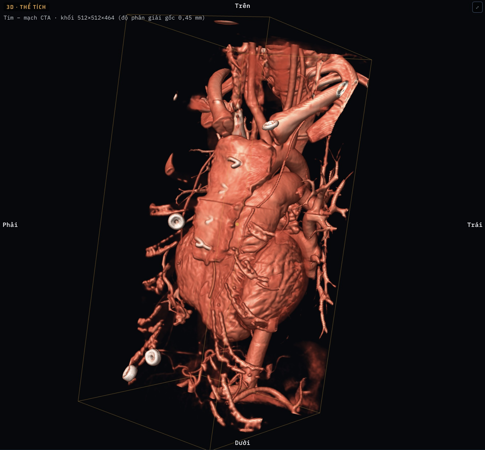
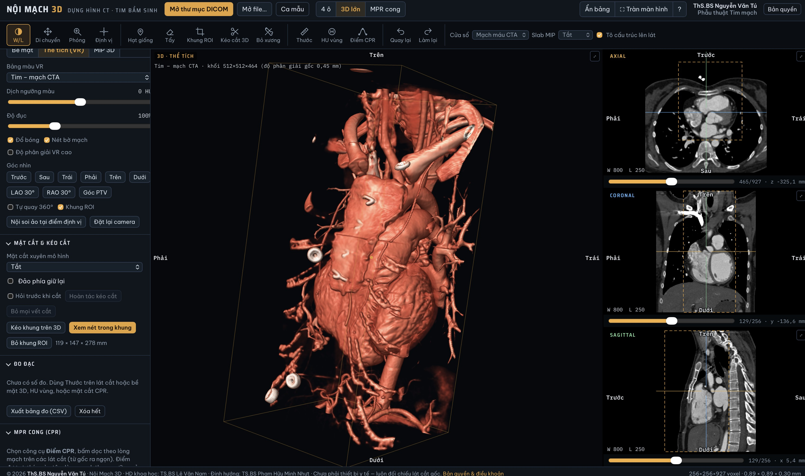
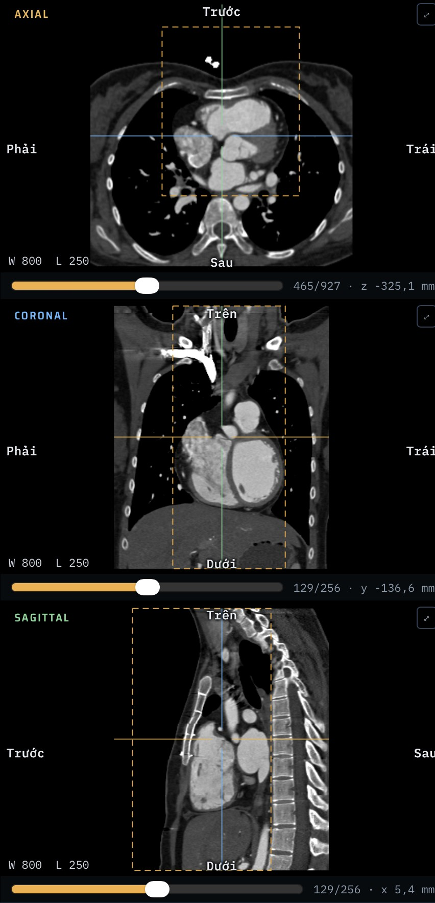

AI thực chiến trong y khoa
Một bác sĩ không biết lập trình đã làm được gì, và kiểm như thế nào
ThS.BS Nguyễn Văn Tú

Nội mạch 3D – Dựng hình CT
Chạy trên trình duyệt. Dùng tham khảo trước mổ tại Khoa Ngoại 1, Viện Tim TP.HCM.
Ảnh chụp từ phần mềm, đã ẩn danh. Khi trình bày: demo sống hoặc video xoay hình.
ThS.BS Nguyễn Văn Tú · Từ hỏi AI đến giao việc cho AI
02
Ý chính của buổi hôm nay
Hỏi AI thì nhận một câu trả lời. Giao việc thì nhận một sản phẩm, và phải tự kiểm sản phẩm đó.
ThS.BS Nguyễn Văn Tú · Từ hỏi AI đến giao việc cho AI
03
Ba tầng dùng AI
Nhận về đoạn văn. Kiểm: đọc lại.
Nhận về bản nháp theo mẫu. Kiểm: đối chiếu tài liệu gốc.
Nhận về sản phẩm chạy được. Kiểm: nghiệm thu như một sản phẩm.
Lên tầng cao hơn thì làm được nhiều hơn, và phần kiểm cũng nặng hơn.
ThS.BS Nguyễn Văn Tú · Từ hỏi AI đến giao việc cho AI
04
Bốn ca thực chiến
CA A
Nội mạch 3D – Dựng hình CT
CA B
Đề cương, số liệu, y văn
CA C
Ngân hàng câu hỏi, web mô phỏng
CA D
Hồ sơ, biểu mẫu, bài giảng
1. Vấn đề là gì
2. Đưa gì cho AI
3. Nhận lại gì
4. Kiểm ở đâu
5. AI sai ở đâu
ThS.BS Nguyễn Văn Tú · Từ hỏi AI đến giao việc cho AI
05
Ca A · Phần mềm · 1/3

[Anh điền: loại bệnh, điều khó hình dung trên lát cắt 2D]
[Anh điền: một điều ê-kíp thấy rõ hơn]
Giữa: hình dựng thể tích. Phải: ba mặt cắt CT gốc.
ThS.BS Nguyễn Văn Tú · Từ hỏi AI đến giao việc cho AI
06
Ca A · Phần mềm · 2/3
BÁC SĨ
Cần thấy gì, dùng khi nào
→
AI
Đọc file CT, hiển thị 3D
→
BÁC SĨ
So với lát cắt gốc
→
BÁC SĨ
Bằng ngôn ngữ giải phẫu
→
AI
Rồi lặp lại vòng
Đó là vai trò của AI trong ca này.
Khi chạy, app dựng hình theo giá trị HU: bề mặt, thể tích (VR), MIP. [Anh xác nhận: không có mô hình học máy]
ThS.BS Nguyễn Văn Tú · Từ hỏi AI đến giao việc cho AI
07
Ca A · Phần mềm · 3/3

Lát cắt gốc
Hình dựng của cùng ca
[Anh xác nhận: vân bậc thang trên thành mạch; các vòng trắng là gì]
[Anh điền một lỗi thật: mã chạy được nhưng hình không khớp]
Chưa phải thiết bị y tế. Có thước đo, nhưng chưa so sai lệch với phần mềm chuẩn.
ThS.BS Nguyễn Văn Tú · Từ hỏi AI đến giao việc cho AI
08
Ca B · Nghiên cứu · 1/2
| Việc | Đưa gì cho AI | Nhận lại | Kiểm ở đâu |
|---|---|---|---|
| Đề cương, phiếu thu thập | Câu hỏi nghiên cứu, mẫu của hội đồng, tài liệu nền | Bản nháp đúng mẫu, danh sách biến số | Người hướng dẫn và hội đồng duyệt thiết kế |
| Phân tích số liệu | File số liệu đã bỏ định danh, kế hoạch phân tích chốt trước | Bảng, biểu đồ, kèm mã R chạy lại được | Chạy lại mã trên máy mình; người hiểu thống kê duyệt |
| Tổng quan y văn | Câu hỏi, tiêu chí chọn bài, khoảng năm | Bảng tổng hợp có PMID | Mở từng PMID trên PubMed, đối chiếu số liệu |
[Anh chọn một đề tài thật để kể, và chỉ giữ những dòng anh đã tự làm]
ThS.BS Nguyễn Văn Tú · Từ hỏi AI đến giao việc cho AI
09
Ca B · Nghiên cứu · 2/2
1
Tên bài, tác giả, số liệu nghe rất hợp lý nhưng không có thật.
Mở từng PMID.
2
Mã chạy ra con số, nhưng phép kiểm không hợp với dữ liệu.
Người hiểu thống kê duyệt.
3
AI làm mười phân tích trong vài phút; dễ giữ lại phân tích đẹp nhất.
Chốt kế hoạch trước khi chạy.
[Anh điền một lần AI sai thật trong đề tài của anh]
ThS.BS Nguyễn Văn Tú · Từ hỏi AI đến giao việc cho AI
10
Ca C · Giảng dạy · 1/2
Quy trình đóng gói (skill)
Mỗi câu có tình huống lâm sàng, bốn phương án, một đáp án đúng.
Ghi mức Bloom; giải thích vì sao đúng và vì sao từng phương án sai.
Ghi nguồn guideline hoặc giáo trình; đúng biểu mẫu của trường.
Không lặp câu đã có.
Người ra đề duyệt từng đáp án và từng nguồn trước khi đưa vào ngân hàng.
[Anh điền: ví dụ một câu có đáp án chưa chuẩn hoặc nguồn ghi sai]
Đề thi là tài liệu mật: không đưa đề thật lên nền tảng chưa được nhà trường cho phép.
ThS.BS Nguyễn Văn Tú · Từ hỏi AI đến giao việc cho AI
11
Ca C · Giảng dạy · 2/2
Đang làm
[Ảnh màn hình web mô phỏng EVAR / TEVAR]
Chỉ chiếu phần đã chạy được
Học viên thao tác từng bước trên mô hình, thay vì chỉ đọc slide.
Giảng viên duyệt từng nội dung chuyên môn theo giáo trình và guideline.
[Anh điền một chi tiết chuyên môn AI vẽ hoặc viết sai]
ThS.BS Nguyễn Văn Tú · Từ hỏi AI đến giao việc cho AI
12
Ca D · Việc lặp lại
Bộ biểu mẫu nghiệm thu, thanh quyết toán: nhiều văn bản, cùng một bộ thông tin.
Từ giáo trình và mục tiêu bài học ra bản Word và bộ slide đúng mẫu.
Slide và kịch bản soạn cùng AI; ý, ca bệnh và mọi con số do tôi quyết.
AI sai ở đâu: chép lệch số tiền, ngày tháng, tên biểu mẫu. Đối chiếu với văn bản gốc trước khi ký.
[Anh giữ thẻ nào đã làm thật; điền một lỗi cụ thể đã gặp]
ThS.BS Nguyễn Văn Tú · Từ hỏi AI đến giao việc cho AI
13
Nhìn lại bốn ca
| Ca | AI làm | Người giữ | Kiểu sai phải canh |
|---|---|---|---|
| Phần mềm | Viết và sửa mã | Dựng gì, đúng hay sai so với phim gốc | Mã chạy được nhưng hình sai |
| Nghiên cứu | Nháp, mã phân tích, tìm bài | Câu hỏi, thiết kế, phương pháp | Trích dẫn không có thật, kiểm định sai |
| Giảng dạy | Soạn câu hỏi, dựng mô phỏng | Nội dung chuyên môn, đáp án | Sai chuyên môn trình bày rất tự tin |
| Việc lặp lại | Điền mẫu, dàn trang | Số liệu gốc, chữ ký | Chép lệch số, ngày, tên mẫu |
Cột giữa không giao được cho AI, vì đó là phần phải chịu trách nhiệm.
ThS.BS Nguyễn Văn Tú · Từ hỏi AI đến giao việc cho AI
14
Nguyên tắc nghiệm thu
Mỗi sản phẩm cần một nguồn đối chiếu nằm ngoài AI: phim gốc, hồ sơ gốc, PubMed, mã chạy lại, người có chuyên môn.
ThS.BS Nguyễn Văn Tú · Từ hỏi AI đến giao việc cho AI
15
Cơ chế phía sau · 1/4
Cùng một model, khác năm lớp phía trên thì ra kết quả khác hẳn.
ThS.BS Nguyễn Văn Tú · Từ hỏi AI đến giao việc cho AI
16
Cơ chế phía sau · 2/4
Bước 2 đến 4 tự lặp nhiều lần mà không cần người nhắc.
Làm được gì thì cũng làm sai được nấy: đúng thư mục, không quyền xoá, duyệt trước thay đổi lớn.
ThS.BS Nguyễn Văn Tú · Từ hỏi AI đến giao việc cho AI
17
Cơ chế phía sau · 3/4
| Bước | Làm gì | Giống việc gì trong viện |
|---|---|---|
| 1. Đặc tả | Viết rõ mục tiêu, đầu ra, điều không được làm | Y lệnh rõ ràng |
| 2. Bối cảnh | Đưa mẫu, tài liệu, quy ước; ghi lại để lần sau đỡ dặn | Hồ sơ bệnh án |
| 3. Thực hiện | Bắt AI trình kế hoạch, duyệt rồi mới cho làm | Duyệt mổ |
| 4. Kiểm chứng | Đối chiếu với nguồn nằm ngoài AI | Nghiệm thu, bình bệnh án |
| 5. Lưu lại | Đóng gói thành quy trình; lưu phiên bản để quay lại được | Quy trình chuẩn (SOP) |
Bước 1 và bước 4 không giao được cho AI. Người dùng ở tầng một thường bỏ cả hai.
ThS.BS Nguyễn Văn Tú · Từ hỏi AI đến giao việc cho AI
18
Cơ chế phía sau · 4/4
Phiên quá dài thì chi tiết ở đầu dễ bị bỏ sót.
Mỗi việc một phiên riêng.
Câu sai và câu đúng được viết bằng cùng một giọng tự tin.
Kiểm bằng nguồn, không kiểm bằng cảm giác.
Cùng một yêu cầu, hai lần chạy có thể ra hai kết quả.
Lưu câu lệnh và mã để chạy lại.
Model học tới một thời điểm; guideline mới hơn có thể chưa có.
Đưa tài liệu gốc hoặc bắt tra nguồn.
ThS.BS Nguyễn Văn Tú · Từ hỏi AI đến giao việc cho AI
19
Đi xa hơn
Hướng của ngành, chưa phải việc tôi đã làm
Mô hình học máy tự tách cấu trúc giải phẫu, ví dụ TotalSegmentator, dùng được trong 3D Slicer.
Từ hình dựng ra mô hình cầm được trên tay, đã được báo cáo trong chuẩn bị mổ tim bẩm sinh phức tạp.
AI nghe buổi khám và soạn nháp bệnh án cho bác sĩ duyệt; một số hệ thống y tế nước ngoài đã triển khai.
Cả ba đều đụng tới dữ liệu và quyết định trên bệnh nhân, nên cần kiểm định và quy định trước khi dùng. Nguồn: Wasserthal J và cs., Radiology: Artificial Intelligence 2023.
ThS.BS Nguyễn Văn Tú · Từ hỏi AI đến giao việc cho AI
20
Ranh giới
Không đưa thông tin định danh lên nền tảng chưa được bệnh viện cho phép.
Tự làm để tham khảo thì được; dùng để chẩn đoán, điều trị thì phải kiểm định và theo quy định về thiết bị y tế.
AI không đứng tên tác giả; việc dùng AI phải khai báo theo yêu cầu của tạp chí (khuyến cáo ICMJE).
Nội soi đại tràng: tỷ lệ phát hiện u tuyến ở ca không có AI giảm từ 28,4% xuống 22,4% sau khi trung tâm dùng AI.
Budzyń K và cs., Lancet Gastroenterol Hepatol 2025. Nghiên cứu quan sát: không chứng minh nhân quả, không suy trực tiếp sang phẫu thuật.
ThS.BS Nguyễn Văn Tú · Từ hỏi AI đến giao việc cho AI
21
Đề xuất
1. Chọn một việc mình làm lặp lại mỗi tuần.
2. Viết ra cách kiểm trước khi giao cho AI.
3. Thử với dữ liệu giả hoặc đã ẩn danh.
4. Ghi lại một lần AI sai.
1. Nói rõ nền tảng nào được dùng, với loại dữ liệu nào.
2. Mỗi khoa thử một việc, ghi thời gian tiết kiệm và lỗi gặp phải.
3. Mọi sản phẩm có AI tham gia đều có người kiểm ký tên.
ThS.BS Nguyễn Văn Tú · Từ hỏi AI đến giao việc cho AI
22
Giao việc cho rõ, và nghiệm thu cho kỹ.
Xin cảm ơn · ThS.BS Nguyễn Văn Tú
ThS.BS Nguyễn Văn Tú · Từ hỏi AI đến giao việc cho AI
23